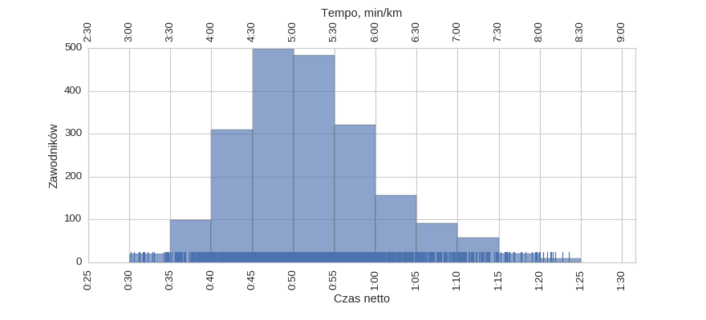
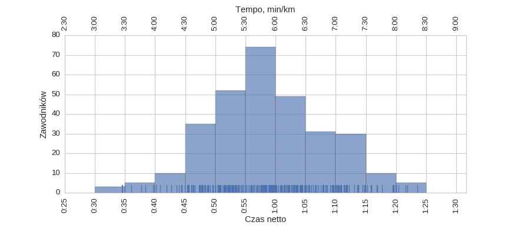
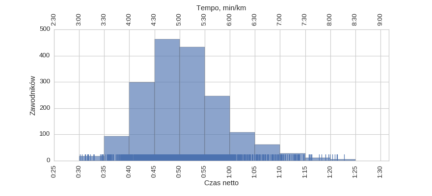
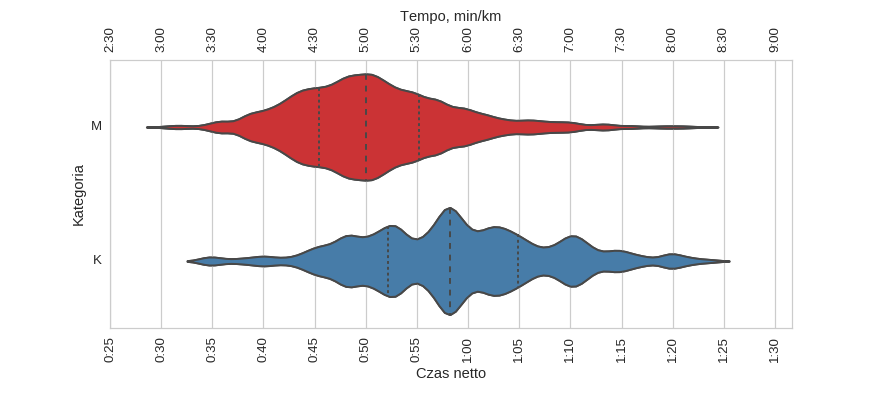

Statystyki biegowe
Statystyki biegoweXVIII Bieg Niepodległości (2006)
Histogramy
Klasyfikacja generalna

| mean | std | min | 25% | 50% | 75% | max | |
|---|---|---|---|---|---|---|---|
| czas | 0:52:04 | 0:08:44 | 0:30:10 | 0:46:08 | 0:50:53 | 0:57:01 | 1:23:36 |
kobiety

| mean | std | min | 25% | 50% | 75% | max | |
|---|---|---|---|---|---|---|---|
| czas | 0:58:51 | 0:09:33 | 0:34:27 | 0:52:12 | 0:58:12 | 1:04:51 | 1:23:36 |
mężczyźni

| mean | std | min | 25% | 50% | 75% | max | |
|---|---|---|---|---|---|---|---|
| czas | 0:50:54 | 0:08:01 | 0:30:10 | 0:45:27 | 0:50:03 | 0:55:13 | 1:22:49 |
Wykresy rybkowe
wg płci

| czas | count | |||||||
|---|---|---|---|---|---|---|---|---|
| mean | std | min | 25% | 50% | 75% | max | ||
| plec | ||||||||
| K | 0:58:51 | 0:09:33 | 0:34:27 | 0:52:12 | 0:58:12 | 1:04:51 | 1:23:36 | 304 |
| M | 0:50:54 | 0:08:01 | 0:30:10 | 0:45:27 | 0:50:03 | 0:55:13 | 1:22:49 | 1764 |
Menu
HistogramyWykresy rybkowe
∙ wg płci
Dystans: 10.0 km
Liczba uczestników: 2068
Wygenerowano: 2016-06-14 21:26:14.888533